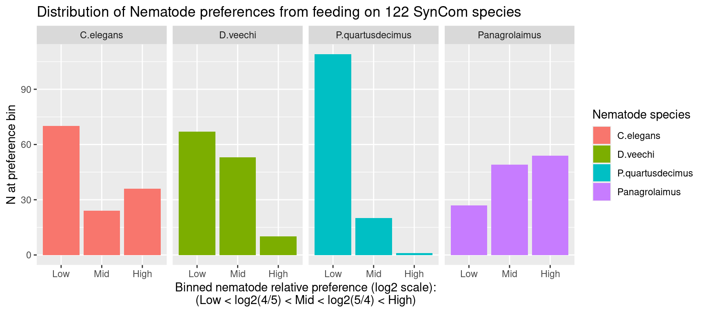
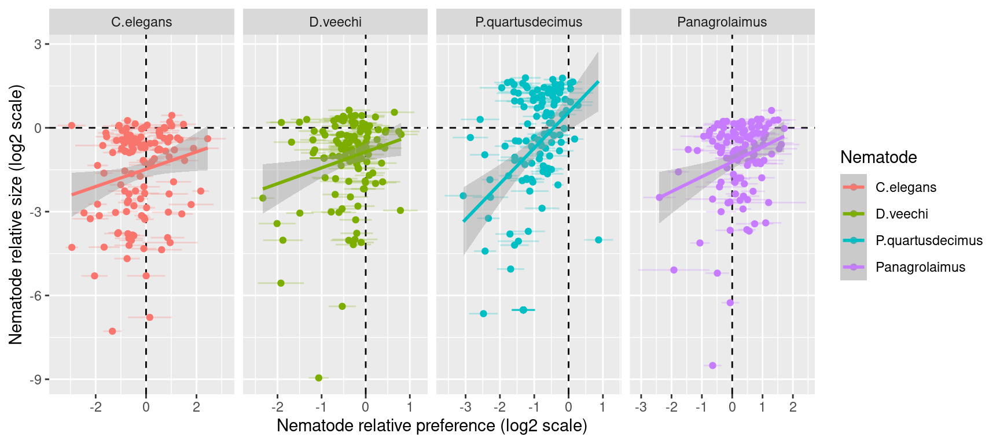

Nematode trait data exploration
Abstract
Try and get some general insights into the distribution of different nematode traits
1 Code
R script with all required code is available at https://github.com/slhogle/huiyu_projects/blob/main/R/02_ne_trait_exploration.R
2 Plots

